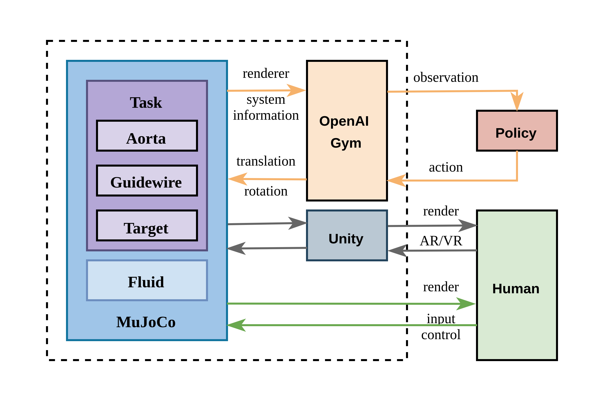
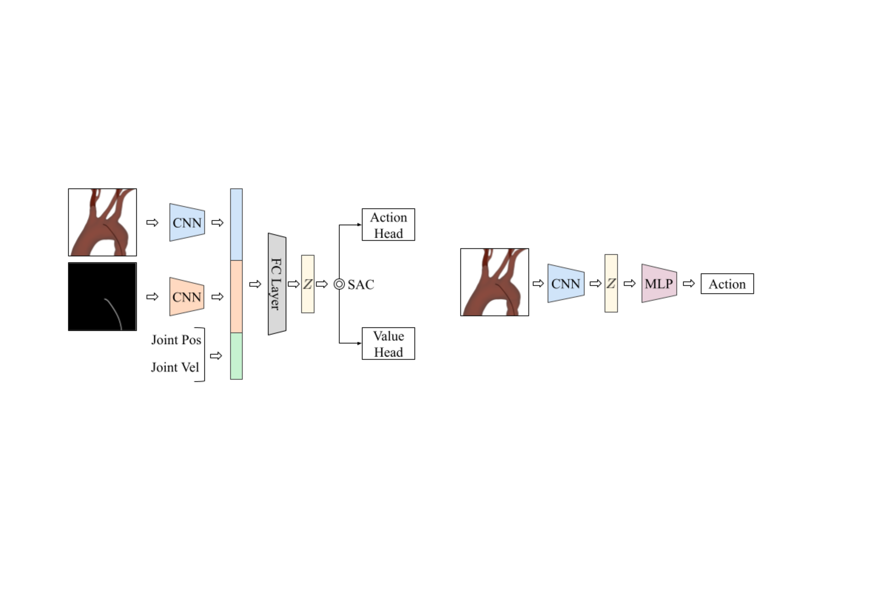
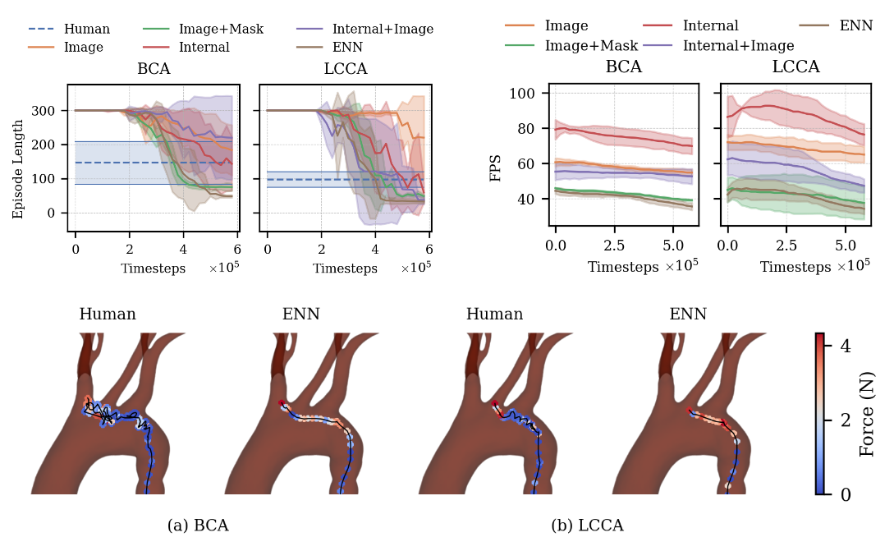

Introduction
Welcome to CathSim project! CathSim is a pioneering open-source simulator dedicated to endovascular interventions, meticulously designed to facilitate the advancement and implementation of autonomous robotic systems in medical procedures. This platform is tailored to accelerate the training of robotic systems, enhancing precision and efficacy in minimally invasive surgeries through the integration of RL algorithms and high-fidelity simulations.
High-Fidelity Real-Time Simulation:

CathSim: Employs the MuJoCo physics engine for seamless, real-time interactions, significantly advancing the fidelity and responsiveness of surgical simulations.
Comparison: Outperforms typical simulators like SOFA or Unity, which may not support as high a level of real-time data processing and interaction.
Open-Source Platform:

CathSim: Fully open-source, promoting wider accessibility and collaborative improvements across the medical and academic communities.
Comparison: Offers a stark contrast to many current medical simulators that are proprietary, limiting the ability for widespread development and innovation.
Real-Time Force Sensing: The simulator excels in capturing and analyzing contact forces between surgical instruments and vascular tissues, closely mimicking the intricate physical interactions encountered during actual medical procedures. This feature is vital for developing safer and more effective surgical practices.
Autonomous Navigation: Leveraging cutting-edge reinforcement learning algorithms, CathSim automates complex navigational tasks within the vascular system, significantly reducing reliance on manual control while increasing procedural precision and safety. The use of Proximal Policy Optimization (PPO) and Soft Actor-Critic (SAC) algorithms demonstrates substantial advancements in autonomous medical robotics.
Comparative Simulator Analysis: CathSim includes analytical tools that allow for direct comparisons with other simulators, highlighting its superior capabilities in autonomy and simulation accuracy. This comparative analysis is essential for demonstrating the enhancements CathSim brings to the field of medical simulation.
Integration of Advanced Reinforcement Learning:
CathSim: Utilizes sophisticated RL algorithms such as PPO and SAC to automate catheter navigation, pushing the boundaries of what is achievable in autonomous robotic surgeries.
Comparison: Provides a more robust and adaptable learning environment than other simulators, which may lack support for advanced machine learning techniques.
CathSim Performance Summary:

Type-I Aortic Arch (BCA and LCCA Targets):
The Proximal Policy Optimization (PPO) algorithm demonstrated a high success rate with lower average and maximum forces applied, indicating efficient and gentle navigation for the BCA target.
The Soft Actor-Critic (SAC) algorithm showed a lower success rate and higher force application for the LCCA target, suggesting room for optimization in complex navigational tasks.
Type-II Aortic Arch (BCA and LCCA Targets):
SAC achieved a 100% success rate in BCA target navigation with no force applied, signifying perfect performance within this simulation scenario.
PPO achieved higher success in LCCA target navigation with slightly higher forces applied, showcasing effectiveness across different targets.
Stay Updated
The CathSim website is continually updated with the latest developments in simulator enhancements, groundbreaking research findings, and contributions from our growing community.